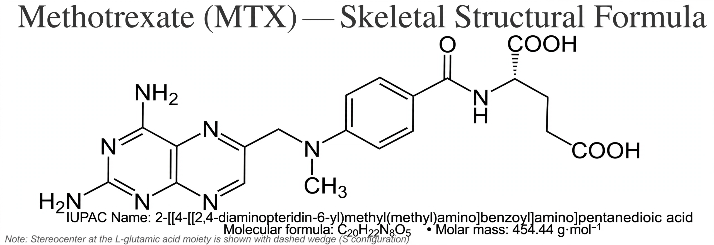

From Wikipedia, the free encyclopedia
| Methotrexate | |
|---|---|
| Trade names | Rheumatrex, Trexall |
| IUPAC name | (2S)-2-[[4-[(2,4-diaminopteridin-6-yl)methyl-methylamino]benzoyl]amino]pentanedioic acid |
| CAS | 59-05-2 |
| Formula | C20H22N8O5 |
| Molar mass | 454.447 g/mol |
Methotrexate (MTX), formerly known as amethopterin, is a chemotherapy agent and immunosuppressant medication. It is used to treat cancer, autoimmune diseases, rheumatoid arthritis, psoriasis, and ectopic pregnancy.

Methotrexate is used to treat cancers such as acute leukaemia, lymphoma, breast cancer, and gestational trophoblastic disease. In lower doses it is a disease-modifying antirheumatic drug (DMARD) for rheumatoid arthritis and psoriasis, and is also used for Crohn's disease and multiple sclerosis.
Methotrexate is a antimetabolite and antifolate drug. It inhibits dihydrofolate reductase, an enzyme involved in the synthesis of nucleotides, thereby blocking DNA replication and cell division. The drug acts most strongly on rapidly dividing cells, which underlies both its anti-cancer and anti-inflammatory effects.
Common side effects include nausea, fatigue, mouth ulcers, hair loss, and liver damage. Folate supplementation (folinic acid) reduces toxicity. It is teratogenic and contraindicated in pregnancy.
Methotrexate was developed in the 1940s by Sidney Farber and colleagues at Harvard Medical School, initially based on studies of folic acid analogues by Yellapragada Subba Rao. It was approved for medical use in the United States in 1953.
This article is about a medication. For the chemistry of folate antagonists, see Antifolate.